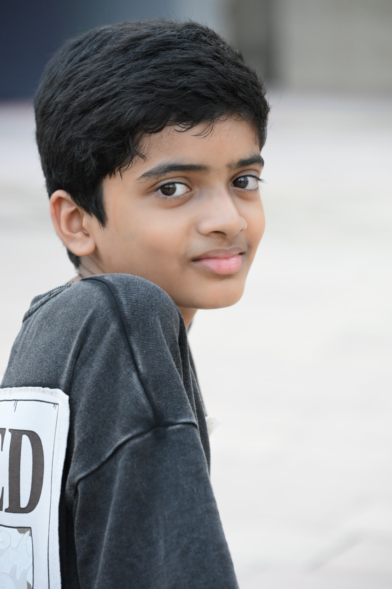

ROBLOX GAME01
Escape the Glitch
A Roblox obstacle/adventure project featuring checkpoints, progression, abilities, UI systems, codes, currency, admin events, and more.
Roblox StudioLuauDataStore
View project ↗
STUDENT • CREATOR • DEVELOPER
I build Roblox games, websites, and creative digital projects while learning the skills for my future as a game developer and content creator.

Building today.
Creating the future.
01 — ABOUT
I'm Niranjan, also known as Lite — a student interested in game development, web development, technology, and content creation. I enjoy turning ideas into working projects and improving them step by step.
02 — PROJECTS
A Roblox obstacle/adventure project featuring checkpoints, progression, abilities, UI systems, codes, currency, admin events, and more.
Web projects built and published with GitHub, using HTML and CSS and learning modern web development along the way.
My gaming/content brand focused on Roblox and creating entertaining videos with the goal of making people laugh.
03 — GALLERY


04 — SKILLS
05 — JOURNEY
Learning & building
Developing Roblox games, websites and creator projects while studying at Ayadi Glocal School.
Portfolio & experience
Add certifications, internships, larger projects and achievements as they happen.
Career
Use this portfolio to showcase real work when applying for further study, internships and jobs.
07 — SETTINGS
Designed for a clean, focused portfolio experience.
Images are displayed without forced cropping or stretching.
The portfolio adapts to desktop, tablet, and mobile screens.
Subtle hover and scrolling effects keep the interface lively.
06 — CONTACT
Explore my work and follow my projects as I keep building.